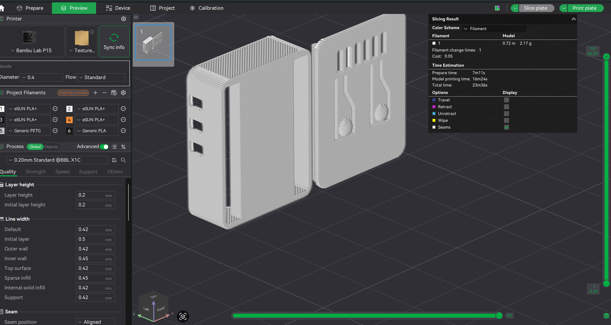

Prototype 2
This is the second prototype of the ESP32-C3 Zero case. This page will detail the improvements and changes made from the first prototype.
3D Model

3D Print

Improvements from previous prototype
- Printed alot better, improving the visual appeal
- Adjusted the lid design for better fit and functionality
- The buttons have been redesigned to be more accessible and provide better tactile feedback when pressed.
- Added the model number to the case for better identification.
Potential Improvements
Improvements could include further refining the vent placement and size, and exploring ways to make the case even more durable. The button design could also be improved for even better tactile feedback, reducing the complextiy of the button to improve printing effeciency.